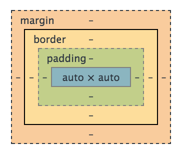

The Mystery of Margin, Border, and Padding
...and why is that visual so hard to understand?
August 9, 2015
What is the difference between Margin, Border, and Padding? Good question! The answer usually comes with a reference to this image:
This visual has a reason for being using, but it doesn't explain much without a bit of comparisons and a few definitions. It is called the "box model" and
Margin
Margin is the space set from the edge of an object (or the objects borders) to the outside. It makes a space around the object, like a fence around a house or the distance noted in a restraining order. It says "Keep X distance from me!". The border is excluded from this measurement and is treated as part of the object itself. You can think of a borders like frosting, it's still part of the cake no matter how thick it is and kids need to keep the same distance back from the icing as the cake (until it's time to eat it)
As with cake icing, borders can be adjusted for different distances on each side, top, right, bottom, and left. When margins are made for each side specifically, think of the order of the hands of a clock. We've all been to that sad party where someone made a "healthy" cake and didn't frost all of the sides. Unlike the fool who skipped on the icing, borders can and are added to sides individually without people judging them. It all depends on the needs of the page design, unlike cake where skimping on the icing on one side is frowned upon.
Margins are like icing, except it's ok to put them on less than all sides.Borders
If margins are the distance you must keep from the icing before your finger makes a mark, borders are where the mark is made first. Every item on a page can have a border, whether it's smack dab on it with not a hint showing or it can be larger than the item itself and can also be styled with a different color.
Remember: Margins measure from the border to make a force field type of space. So what measures from the item to the border?
Padding
Padding is the area between the item and it's borders. Every item has a border, whether you see it or not. Think of this as the crust of a cake, not the icing. There is a reason some people like the corner pieces of a brownie and some only want the middle section.
The more the padding increases, the more space the object needs, thus padding can push margins out further.